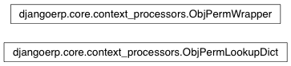

context processors¶

-
class
djangoerp.core.context_processors.ObjPermLookupDict(user, module_name)[código fonte]¶
-
class
djangoerp.core.context_processors.ObjPermWrapper(user)[código fonte]¶
-
djangoerp.core.context_processors.auth(request)[código fonte]¶ Adds a new ‘obj_perms’ context variable.
If there is no ‘user’ attribute in the request, uses AnonymousUser (from django.contrib.auth).
-
djangoerp.core.context_processors.system_info(request)[código fonte]¶ Adds some context variables to print useful system information.
The added context variables are:
- VERSION (django ERP version string)
- COPYRIGHT (django ERP copyright notice)